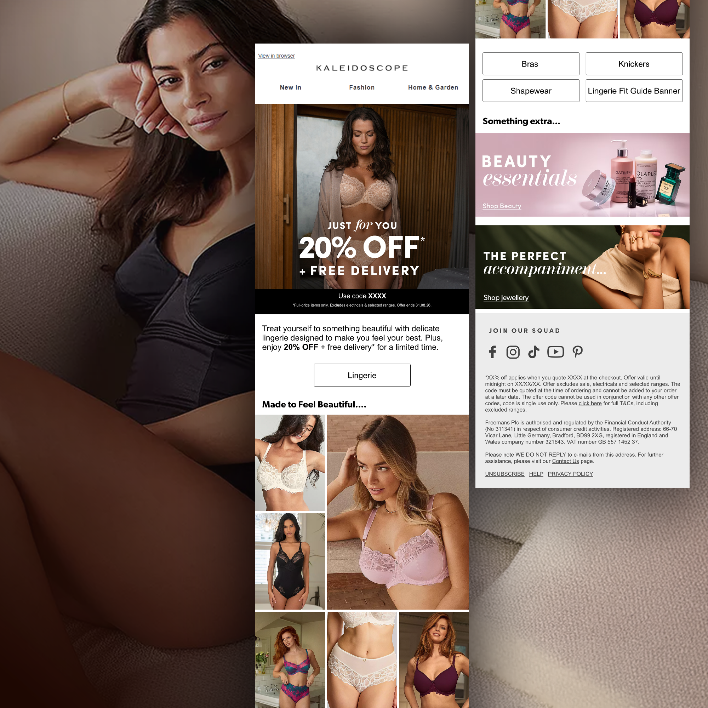
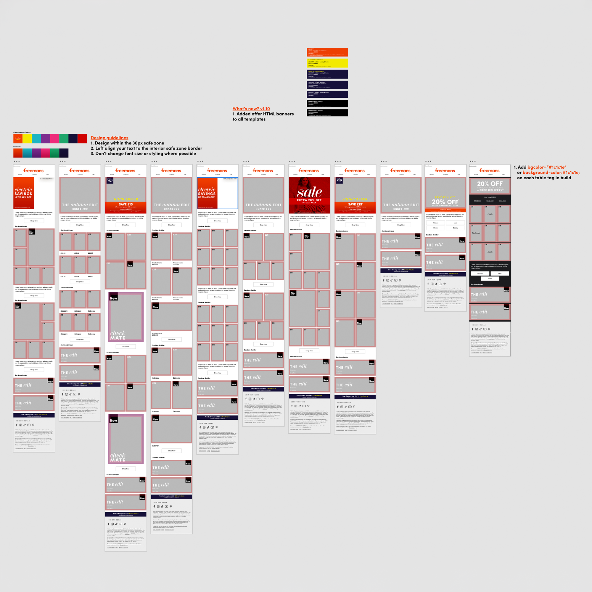
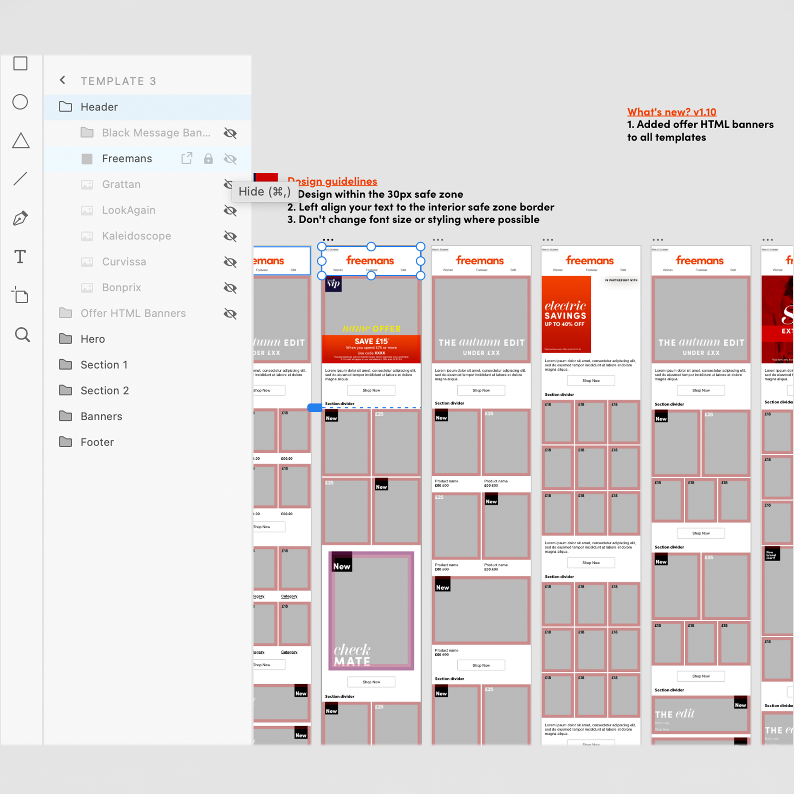
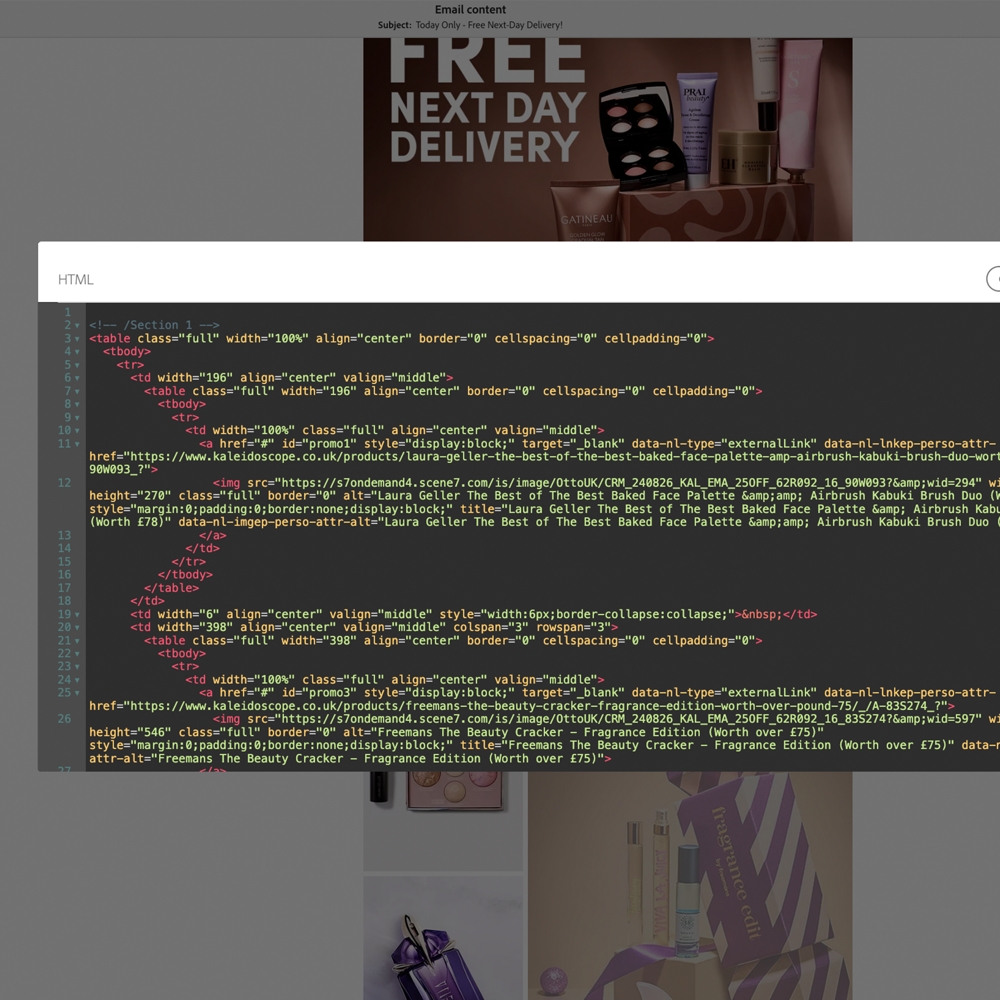
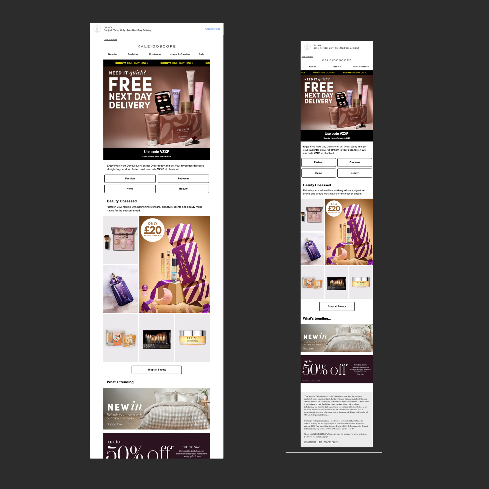

Email is often one of the final touchpoints within a wider campaign, translating the visual language of a campaign into a format designed to engage customers and drive them towards the next stage of their journey.


Our digital design team works from a shared email design system, bringing together reusable templates, components and content sections across our campaigns and brands. With a high volume of email briefs coming through to support the fast pace of trade, the system helps streamline production by providing a consistent foundation for new campaigns. I contribute to and work within this system, adapting existing components and developing new layouts where needed while maintaining consistency across our digital communications.


FROM DESIGN TO BUILD
Using the shared system as a foundation, I translate email designs into responsive HTML and CSS, adapting components and layouts to suit each campaign brief. Alot of these components are already pre-built and tested making the process of builidng new emails more efficient, but I also create new components and layouts where needed, ensuring they are fully responsive and tested across multiple email clients and devices.
Working across both design and development allows me to consider the technical requirements of email early in the process, ensuring the final build stays as close as possible to the original creative.